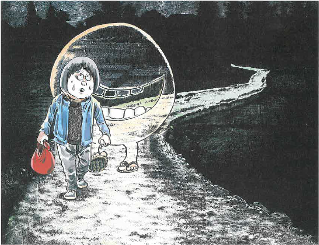
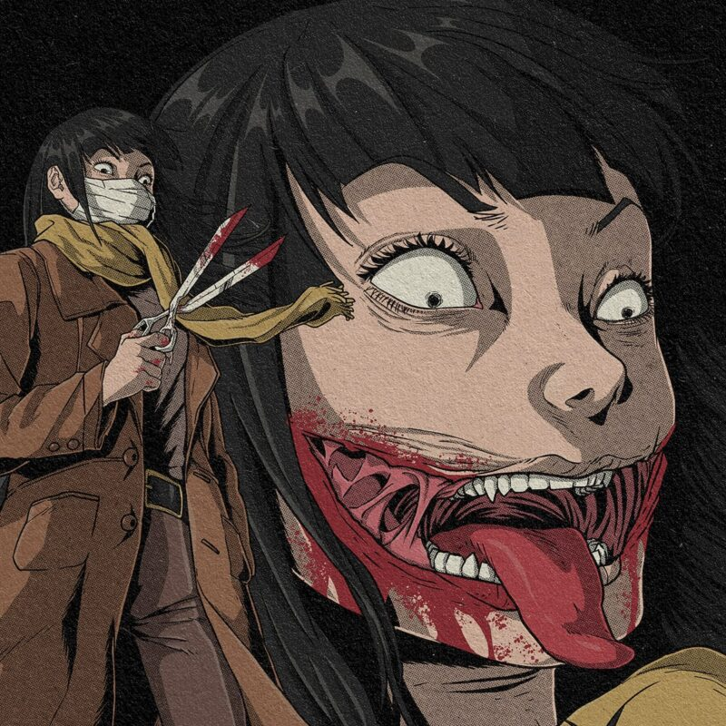
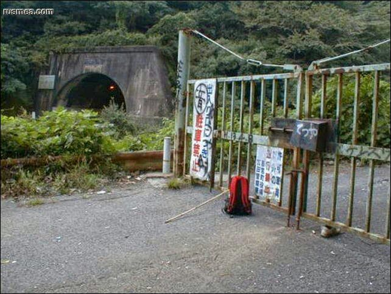

Bem vindo ao mais tenebroso site de Lendas Urbanas Japonesas!
Aqui você podera ver e se aprofundar acerca das principais lendas urbanas japonesas. Então apague as luzes, feche as portas e divirta-se!
Teke-Teke (テケテケ)
Tipo: Youkai Agressivo

Teke Teke (テケテケ), também escrito como Teke-Teke ou Teketeke, é uma lenda urbana japonesa sobre o fantasma de uma estudante que se diz ter caído em uma linha ferroviária, onde seu corpo foi partido ao meio por um trem. Ela é um onryō, ou espírito vingativo, que se esconde em áreas urbanas e ao redor de estações de trem durante a noite. Teke Teke é usualmente representada junto de uma foice, a qual ela provavelmente deve usar para fatiar ao meio os desavisados que caminham a noite, sendo a principal intenção de Teke Teke em utilizar as pernas dos desavisados para um novo meio de locomoção, porém, há variantes, e estas alegam que ela não pegará suas pernas, mas que de fato irá parti-lo ao meio. Não se sabe ao certo se existe um meio de despistar a Teke Teke, algumas fontes sugerem que a pronúncia de seu verdadeiro nome pode fazer recua-la, porém, isso é incerto. Como ela não possui mais a metade inferior do corpo, ela se locomove usando as mãos, arrastando sua parte superior do torso e produzindo um som de arranhão ou "teke teke", que é produzido pelos cotovelos ou pela parte final de seu corpo partido raspando no chão. Se ela encontrar alguém, ela os perseguirá e os cortará ao meio na altura do tronco, matando-os de forma que imita sua própria desfiguração.
BetoBeto-San (べとべとさん)
Tipo: Youkai Inofensivo
Betobeto-san é um youkai japonês da província de Nara que segue as pessoas em estradas durante a noite ou durante a chuva. Costuma ser percebido através do som de seus passos que acompanham os dos viajantes, como se os seguisse, pois não pode ser visto quando estes olham para trás. Eles sincronizam seu ritmo com os pedestres e os seguem o máximo que podem, se aproximando cada vez mais a cada passo. Para as vítimas, isso pode ser traumático. O som assombrado de passos as acompanha onde quer que vão, mas quando se viram, não há nada lá. É um youkai inofensivo e não irá lhe fazer mal. Para repeli-lo é preciso repetir algumas vezes o encantamento "Betobeto-san, voce pode seguir em frente" e ele seguirá seu caminho e o som de seu andar irá sumir em breve. O seu nome vem do som que seus chinelos de madeira causam no chão enquanto ele anda, se assemelhando ao som de "Beto-Beto". Visto isso, percebe-se que muitas das lendas japonesas como por exemplo o BetoBeto-San e a propria Teke-Teke, se utilizam de onamatopeias para definir seus nomes. Com isso é possivel se observar que os japoneses se utilizam muito das onamatopeias basais em seu cotidiano para definir o nome de lendas e de coisas do dia-dia.
Kuchisake-Onna (口裂け女)
Tipo: Youkai Agressivo
Kuchisake-onna, em português Mulher de boca cortada, é uma personagem do folclore de terror japonês. A imagem mais comum é de uma mulher muito bonita, com a região da boca coberta por uma máscara. É alta, de longos cabelos pretos e um casaco longo, geralmente armada com uma tesoura. A máscara esconde um grande corte que aumenta o tamanho da boca, indo praticamente de orelha a orelha. Algumas versões afirmam que ela tem muitos dentes afiados. A lenda tem como base os rumores de que o espírito de Kuchisake Onna perambula às ruas desertas do Japão durante à noite com uma máscara de cirurgia, e que se você se deparar com ela, logo irá surgir uma pergunta: “Você me acha bonita?”, caso você diga que sim, ela irá tirar a máscara e revelará seu rosto deformado, logo surge novamente a pergunta: “Ainda assim você me acha bonita?”, caso você mude sua opinião sobre a moça e diga “Não”, ela irá te cortar ao meio com uma tesoura, porém, caso sinta-se encurralado e diga “Sim”, ela irá rasgar sua boca para que fique igual à dela. Então, quer dizer que independentemente da escolha, a vítima sempre terá desvantagens no final? Bem... não exatamente! Irei dá uma boa dica pra vocês, se algum leitor aqui pretende ir para o Japão algum dia e usualmente é um caminhante noturno, carregue doces em suas bolsas, de preferência balas e pirulitos, pois a lenda também diz que ela adora doces, e que se você oferecer um à ela, irá agradar o espírito, fazendo com que ela deixe você ir embora. .
Vila Inunaki (犬鳴村)
Tipo: Local amaldiçoado
A Vila Inunaki está localizada no interior do Japão, na prefeitura de Hyogo, perto da cidade de Tamba. A vila foi fundada em meados do século XIX, durante a era Edo, e rapidamente se tornou um importante centro de produção de seda. No entanto, logo após a Segunda Guerra Mundial, a vila começou a declinar, e muitos de seus habitantes partiram em busca de novas oportunidades.Com o tempo, a vila foi sendo abandonada, e muitas das casas e edifícios foram deixados em ruínas. A medida que a vila ficava cada vez mais isolada e deserta, muitas histórias sinistras começaram a surgir sobre eventos estranhos e sobrenaturais que ocorriam na região. A Lenda da Vila Inunaki fala sobre uma vila abandonada e assombrada por forças sobrenaturais aterradoras. Segundo a lenda, a vila foi palco de sacrifícios humanos e rituais demoníacos, que atraíram a atenção de entidades malignas. As histórias falam de sombras sinistras, risadas fantasmagóricas e outras manifestações inexplicáveis. Alguns afirmam que fantasmas e espíritos vingativos habitam a vila e que os viajantes que passam por lá são frequentemente confrontados por forças sobrenaturais que tentam detê-los. Muitos acreditam que a Vila Inunaki é habitada por entidades de origem demoníaca, que podem possuir aqueles que se aventuram por lá. Os viajantes que conseguem retornar da vila relatam experiências aterrorizantes, como vozes sussurrantes, visões perturbadoras e outras manifestações sobrenaturais.